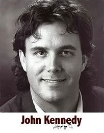

|  |
Regarded as one of America's foremost proponents of new music, John Kennedy has forged a diverse musical career centered on new music performance and advocacy, through work as a composer, conductor, performer, and educator.John Kennedy's Personal Website» John Kennedy was born in Minnesota in 1959, and received a B.M. from the Oberlin Conservatory and a M.M. from Northwestern University. He has forged a diverse musical career centered on new music performance and advocacy, through work as a composer, conductor, performer, and educator. Regarded as one of America's foremost proponents of new music, he has worked closely with some of the leading composers of our time, including Robert Ashley, John Cage, Philip Glass, Lou Harrison, Gian Carlo Menotti, and Steve Reich. Kennedy has developed a unique compositional voice which draws upon experimental traditions but which has proven extremely appealing to audiences and musicians. His works include opera, cantata, orchestral, and chamber music, with numerous vocal works and songs. His compositions have received performances throughout the world, including at Lincoln Center, the Kennedy Center, the Brooklyn Academy of Music, Santa Fe Stages, San Francisco’s Other Minds Festival, the Aspekte Salzburg Festival, the Zurich June Festival, Spoleto’s Festival dei due Mondi, Paris’ Soirée Nomades, Dijon’s Festival Nouvelle Scenes, and the Singapore Arts Festival. He has been commissioned by the Santa Fe Opera, Sarasota Opera, Spoleto Festival USA, Twentieth Century Unlimited, Bay Area Pianists, the Kanagawa Arts Festival, the New Renaissance Chamber Artists, and others. A CD of his chamber cantata One Body is available on the SFNM (Santa Fe New Music) label of First Edition Records. The work has been performed as a solo ballet by Peter Boal of New York City Ballet, choreographed by Albert Evans. His opera The Language of Birds premiered at Sarasota Opera in 2004, and in 2007 the Santa Fe Opera will present the premiere of his chamber opera The Faraway Nearby. Since 1990, Kennedy has been Director of the Music in Time concert series at the Spoleto Festival USA, where he conducts and leads performances with the Spoleto Festival Orchestra (of which he is also Associate Conductor) and guest artists. His Spoleto programs have built a diverse and loyal audience for new music and have included numerous American premieres of international work. In recent years he has been sought as a conductor of music ranging from Mozart to Stravinsky and the present, serving as a guest conductor with organizations including the Lincoln Center Festival, New York City Ballet, the Santa Fe Chamber Music Festival, the Santa Fe Desert Chorale, Arena Stage (Washington DC), the Merce Cunningham Dance Company, and others. Kennedy lived in New York for 15 years, where in 1987 he founded the ensemble Essential Music, which presented over 100 premieres of new work, and which toured throughout Europe and Japan. He founded SFNM (Santa Fe New Music) when he moved to Santa Fe in 1999, which provides deep community immersion of new music through wide collaboration with museums and other performing organizations. SFNM has an annual concert series, a biannual festival, has launched the nation's first New Music Youth Ensemble, and directs the New Mexico Young Composers' Project with awards for children 11-18. Kennedy is the author of several composer entries for the New Grove II Dictionary of Music, as well as numerous journal articles on music in Musical Quarterly, NewMusicBox, and elsewhere. A member of the Board of the American Music Center, he was its President from 2002-2005. |
|